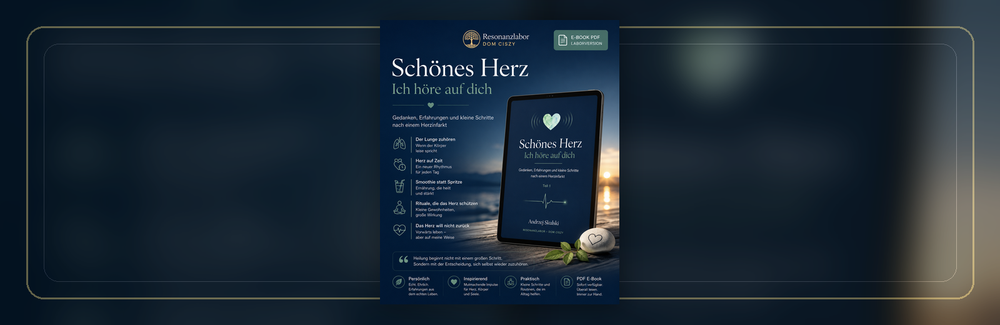

Roman
Weltentango
Die ursprüngliche Version des Romans von 2022: ein literarischer Bewegungsraum zwischen Welt, Wahrnehmung, Tanz und innerer Suche.
Light up Reader
Ein Leseraum für Bücher, Materialien und Weiterreisen: Texte, die den Denkraum von Light up Reader vertiefen, öffnen oder in verwandte Räume führen.
Eigene Veröffentlichungen
Diese Bücher sind keine getrennte Shopwelt. Sie führen einzelne Bewegungen der Website weiter: erzählerisch, essayistisch oder literarisch.
Roman
Die ursprüngliche Version des Romans von 2022: ein literarischer Bewegungsraum zwischen Welt, Wahrnehmung, Tanz und innerer Suche.

Buch
Ein weiterführender Leseraum über Resonanz, Vergänglichkeit und die unsichtbaren Rhythmen des Lebens.

Kinderbuch
Ein warmherziges Buch über verschiedene Sichtweisen, kleine Missverständnisse und die Frage, wie unterschiedlich Lebewesen die Welt betrachten können.
Materialien
Hier entsteht ein Regal für kompakte Materialien: Hefte, Karten, visuelle Denkwege und Arbeitsblätter, die später ergänzt werden können, ohne die Bibliothek neu zu ordnen.
Verdichtete Texte als kompakte Downloads.
Orientierungshilfen, Denkwege und kleine Mappen.
Materialien für Schule, Gespräch und gemeinsames Denken.
Bildmaterial, Poster und visuelle Resonanzen.
Notizen, Skizzen und Arbeitsstände aus offenen Projekten.
Weitere Denkorte
Nicht alles gehört in denselben Raum. Manche Wege führen zu verwandten Projekten, Blogs oder Unterstützungsorten.

Externer Blog
Ein weiterer Denkort außerhalb von Light up Reader: für Fakten, Recherche und die Frage, wie Wirklichkeit geprüft wird.

Patreon
Weiterleitung zum Resonanzlabor Moormerland: ein Ort für Unterstützung, Weiterarbeit und offene Projekte.